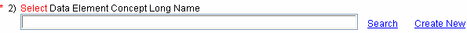
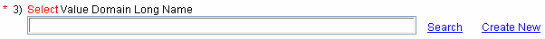
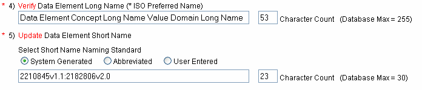
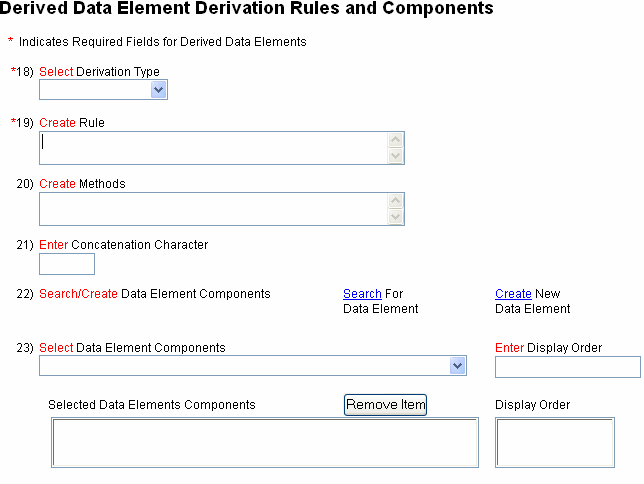
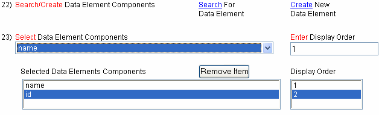

The Curation Tool provides you with the ability to create and edit Data Element, validate the Data Element's attributes, and submit (i.e. store) the Data Element in the NCI`s Cancer Data Standards Repository (caDSR).
Create New or Edit Existing Data ElementsCreate New Data Elements
The primary functions of the CDE Curation Tool are accessed via the dark blue Navigation Bar at the top of each screen. To begin the Create New Data Element process, Select Create è Data Element è New from the Navigation Bar.
You may also want to create a new Data Element using an existing Data Element as a starting template or you may want to version an existing Data Element. Both of these options can be accessed via the Create è Data Element menu in the Navigation Bar.

FIGURE 1
Navigation Bar on the Search Screen
Designate Data Elements
Before you go to the trouble of creating a new Data Element in your Context,
you may choose to Designate an existing Data Element instead. Designating simply
means that you will ‘point’ the existing Data Element (including all of its
attributes) to your Context. In other words, the designated Data Element will
now be ‘Used By’ your Context. A complete listing of Designation rules can be
found on the caDSR Business Rules page.
i
Only Data Elements may be designated, and only those having the following
workflow statuses: APPRVD FOR TRIAL USE, CMTE APPROVED, CMTE SUBMTD USED, DRAFT
MOD, RELEASED, OR RELEASED-NON-CMPLNT.
i
If you Designate a Data Element to your Context, you will have write
privileges for only a few attributes for that Data Element in its current
version. All other changes to the Data Element will be the responsibility of the
'owning' context. This is usually the context for which the Data Element was
originally created.
For more information about Designation, see Designate Data Elements.
Edit Data Elements
You may edit Data Elements in a Context where you have WRITE permission. To begin the Edit process,
Search for a Data Element that you wish to edit. Search for and select one Data
Element in the Search Results table by selecting the checkbox next to that Data
Element. Select the "Edit Selection" button at the top of the screen.
For
more information about searching for Data Elements, see Search for Administered Components.
Block Edit Data Elements
You may edit selected attributes of multiple Data Elements at once. This is
called block editing and can only be done in a Context where you have WRITE permission. Search for and select
multiple Data Elements in the Search Results table and press the Block Edit button to perform simultaneous edits on
multiple Data Elements.
For more information about searching for Data
Elements, see Search for Administered Components.
Block Version Data Elements
To change the version for a group of Data Elements:
- Check the box labeled "Check Box to Create New Version".
- Check either the box labeled "Point Increase" or "Whole Increase".
Whole Increase: Increases the version number of each Data Element in the group to the next whole number (i.e. If your group of Data Elements have versions of 4.0 and 1.5 the version would be changed to 5.0 and 2.0 respectively).
i All edits made during a block version will be made to the new versions of the selected Data Elements. The edits will not be made to the originally selected Data Elements. Versioning rules for caDSR metadata can be found at the caDSR Business Rules page.
Data Element Attributes
Overview
The Create and Edit Data Element screens follow a standard layout for selecting and creating Administered Component attributes. You will see this format for creating new or editing administered components (like Data Element Concepts and Value Domains) throughout the Curation Tool. The asterisk (*) denotes a required field when creating an Administered Component.

FIGURE 2
Create/Edit Data Element Screen
Select a Context
In an organization, the context is a specific function or business unit (ISO/IEC 11179-1:E). For example, if you are creating data elements for a bank, one context may be Account Services, and another may be Loan Services.
- Select the desired Context from the drop down list ( ).
i You must have write permissions within a context to create a new data element in that context.
Data Element Name Overview
The ISO 11179 Standard describes a Data Element as the combination of a Data Element Concept (specifies conceptual information about the Data Element) and a Value Domain (the set of Permissible Values for a Data Element). The first step when naming your new Data Element is to select a Data Element Concept (DEC).
Data Element Concept
The ISO/IEC 11179
Standard describes a Data Element Concept as relating several data elements that
record data about that concept with different representations. For example, a
concept of PatientPlaceOfBirth is a Data Element Concept.
A Data Element
Concept is composed of an Object Class, a Property and Qualifiers for both.
Object Class
The ISO 11179 Standard
describes an Object Class as a set of ideas, abstractions, or things in the real
world that can be identified with explicit boundaries and meaning and whose
properties and behavior follow the same rules. In other words, Object Classes
are the things about which you want to store and collect data. General examples
of Object Classes include cars, trucks, motorcycles, etc. For the example of
PatientPlaceOfBirth, an Object Class is Patient.
Property
The ISO 11179 Standard describes a
Property as a peculiarity common to all members of an object class. In other
words, properties are what humans use to describe or distinguish Objects. For
the example given above, a Property is PlaceOfBirth.
Qualifiers
The ISO 11179 Standard describes
Qualifiers as being used to differentiate between names (i.e. Object Class and
Property combinations) that would otherwise be the same. For the example of
PatientPlaceOfBirth, a Qualifier of year is used to indicate a specific year.
Select a Data Element Concept
Select a Data Element Concept for your new Data Element by clicking on the Search link next to the Data Element Concept field. You can also Create a new Data Element Concept by clicking on the Create New link. See the Create Data Element Concept section of this document for further instructions.

FIGURE 3
Select Data Element Concept Long Name
- Select the Search link next to the "Select Data Element Concept Long Name".
- Search for the desired Data Element Concept by entering search term.
- Click the button.
- select the Search link next to the "Select Data Element Concept Long Name."
- Select/Enter the Data Element Concept attributes.
- Complete and Validate the new Data Element Concept.
- Once you have validated the new Data Element Concept you will return to the Create/Edit Data Element screen.
Once the Data Element Concept is selected, the Data Element Concept Long Name, Data Element Long Name (* ISO Preferred Name), Data Element Short Name and the Definition are all automatically populated with the information from the selected DEC.
Select a Value Domain
The next step in creating your new Data Element is to select a Value Domain (VD). This process is very similar to the one you completed when selecting a Data Element Concept. You can Search for and select a Value Domain or you can Create a new Value Domain by clicking on the Search or Create New links. See the Create Value Domain section of this document for further instructions.
Value Domain
The ISO 11179 Standard
describes a Value Domain as ‘a set of permissible values’. An example is the
Value Domain of ‘Gender Category: M,F’. The permissible values for this Value
Domain would be ‘M means Male’ and ‘F means Female’. A Data Element is
associated with only one Value Domain, and the name of the Value Domain
describes all of the data values that are included in that domain.

FIGURE 4
Select Value Domain Long Name
- Select the Search link next to the " Select Data Value Domain Name".
- Search for the desired Value Domain by entering search term.
- Click the button.
- Select the Create New link next to the " Select Value Domain Long Name."
- Complete and validate the new Value Domain.
- Once you have validated the new Value Domain you will return to the Create/Edit Data Element screen.
Verify Long Name (* ISO Preferred Name) and Short Name
The CDE Curation Tool automatically generates suggested drafts of the Long Name and Short Name. These suggestions are made up of the building blocks you selected in the previous steps. The Long Name field will contain the full names of the selected building blocks. For the Short Name you have a couple of options. These options are System Generated, Abbreviated or User Entered. The System Generated Short Name consists of the Data Element Concepts public id and full version number and the Value Domain public id and full version number with a colon separating the two. The Abbreviated Short Name consists of the both the Data Element Concepts and Value Domain public id and the whole version number (the part before the '.') and the Data Element Long Name truncated separated by the character '_'.
i The Long Name (* ISO Preferred Name) and Short Name that appear in these boxes are draft names. However, you may edit these fields by manually entering text.
FIGURE 5
Verify Long Name and Short Name
i A character count is displayed because there is a caDSR database limit for Long Name (* ISO Preferred Name) and Short Name.
Define a Data Element
The ISO 11179 Standard describes a Data Element definition as ‘A statement that expresses the essential nature of a Data Element and permits its differentiation from all other Data Elements’. Think of a Data Element definition as containing the essential semantic content of a Data Element (i.e. its meaning). The CDE Curation Tool provides you with three options for defining a Data Element. Each of these options is described in detail below.
The tool automatically generates a draft definition composed of the definition of the selected Data Element Concept and Value Domain separated by the character "_". You may edit the draft definition or create a definition from scratch by manually entering text in the definition text box.
Select a Workflow Status and Version
Business rules are implemented by all active Contexts of the caDSR to govern the creation and development of Data Elements and other Administered Components.
i For more information about Versioning and Workflow status see the caDSR Business Rules.i
By default the select the Workflow Status is DRAFT NEW. However, the
Workflow Status can be chosen from the list of available Workflow Statuses in
the drop down list.
i
The default version for a New Data Element is 1.0. However, the Version
text box is editable.

FIGURE 6
Workflow Status and Version Number
- Select the desired Workflow Status from the ‘Select Workflow Status’ drop down box
- To edit the default version enter the new version number in ‘Enter Version’ text box.
Select a Registration Status
A Registration Status designates the position of the Data Element in its registration life-cycle. Select a Data Elements Registration Status by selecting a Registration Status from the drop down list.
i For more information about Registration Status rules see the caDSR Business Rules.

FIGURE 7
Registration Status
- Select the desired Workflow Status from the ‘Select Registration Status’ drop down box ( ).
Enter/Select the Effective Begin and End Date
You may enter the Effective Begin Date in two ways. Enter the date in the text box using the format MM/DD/YYYY or click on the calendar icon and select the date.
i While an Effective End Date is not required; it must be after the Effective Begin Date if entered.

FIGURE 8
Effective Begin Date and Effective End Date
- Enter the date in MM/DD/YYYY ‘ Enter/Select Effective Begin Date’ text field or
- Click on the calendar icon and select the desired date.
Create Preferred Question Text
Preferred Question Text is the actual text that will appear for the Data Element on a Form. This text is associated with the Data Element you are creating.
i Create Preferred Question Text in the Preferred Question Text box. Preferred Question Text is what will appear on the Case Report Form (if the Data Element is intended for CRF use).
Select Classification Scheme/Classification Scheme Items
Classification Schemes are a way of grouping Data Elements based on common characteristics. Classifications also help add information about Data Elements that is not easily included in definitions. For example, you might want to classify Data Elements as belonging to the Classification Scheme Type of Disease. A Classification Scheme Item (CSI) is a component of content in a Classification Scheme (i.e. Liver Cancer).
The parent-child relationship of Classification Scheme Items is displayed in a hierarchical order using indentations.
i When Classification Scheme Items are selected from the list, it and all of its parents are also written to the DE and displayed in hierarchical order in the Associated Classification Schemes Items field.

FIGURE 9
Registration Status
- Select the Classification Scheme from the drop down box ( ).
- Select the Classification Scheme Item from the text box.
- Repeat to select as many classification Scheme/Classification Scheme Items as desired.
- Select the Classification Scheme or the Classification Scheme Item that you wish to remove.
- Click the button.
Select Contacts
Data Element Contact is where you specify points of contact for a particular Data Element. You can specify a contact person or organization along with the information about preferred contact method, address, phone numbers, and order in which contact should be used.

FIGURE 10
Select Contacts

FIGURE 11
Create Contact Attributes Window
- Click the button to open the Create Contact Attributes window.
- Enter Contact Rank Order maximum 3 digits (0-999) to indicate order in which contact should be used.
- Select Contact Person or Select Contact Organization using the radio button ( ).
- Select Contact Person or Select Contact Organization Name from the drop down box ( ).
- Select Contact Role from the drop down box ( ).
- Create Contact Communication Attributes by:
- Selecting Communication Type from the drop down box ( ).
- Enter Call Order (0-999) to indicate order of communication attribute in the text box.
- Create Communication Information in the text box.
- or Selected Communication Attributes by checking the box ( ) next to the desired entry.
- Create Contact Address Attributes by:
- Entering Address Type, Primary Order, Address, City, State and Postal Code then click the button.
- or Selected Communication Attributes by checking the box ( ) next to the desired entry.
- Click the button.
- Repeat to add additional Data Element Contacts.
- Select the desired Contact by clicking on the contact in the Select Contacts box.
- Click the button to open the Create Contact Attributes window.
- Edit the attribute you wish to change.
- Click the button.
- Select the desired Contact by clicking on the contact in the Select Contacts box.
- Click the button.
- Click OK on the confirmation dialog box.
Select the Origin
Data Element Origin is applicable if the Data Element you are creating came from another standard reference source, or as the result of a CDE Committee process.
Create Change Note
Enter Change Note text into the Create Change Note text box. A Change Note is description of any changes to the Data Element.
Create Derived ComponentsData Element
The ISO 11179 Standard
describes a Derived Data Element as the relationship among a derived
administered data component, the rule controlling its derivation, and the
administered data component(s) from which it is derived.
An example is concatenation for the formation of a telephone number from its constituent parts. In the U.S., telephone numbers are uniquely described with ten digits, and these numbers can easily be represented by a data element. However, the telephone companies (and others) need the telephone number separated into area code, exchange code, and line number, making three data elements. Concatenating the area code, exchange code, and line number (in the right way) allows the formation of a data element representing the full telephone number.
The derivation associated with a data element constitutes a powerful way of associating existing data elements with new ones that are needed. A Derived Data Element can be created or edited on the bottom section of the Create or Edit Data Element screens.

FIGURE 12
Derived Data Element Derivation Rules and
Components
Select a Derivation Type
Representation Type is defined as the type of Derived Data Element that is being created. For example a Data Element that is derived by subtracting two dates represented by other data elements would be a Calculated Representation Type.
Creating a Rule
The ISO 11179 Standard describes Derivation Rules as the logical, mathematical, and/or other operations specifying derivation. The rule may range from a simple operation such as subtraction to a very complex set of derivations.
Creating Methods
ISO defines Derivation Rule Application (Method) as the relationship specifying the derivation rule for an administered data component derivation. A method is usually entered for a Derived Data Element that has a Representation Type of Object Class, Complex Recode or Calculated.
Enter a Concatenation Character
A concatenation character is simply a symbol or character that represents the joining point of two or more Data Elements into a Derived Data Element. A concatenation character is usually entered for a Derived Data Element that has a Representation Type of Concatenation, Simple Recode, Complex Recode, or Calculated.
Searching for or Creating Data Element Components
Derived Data Elements are represented in the caDSR as individual data elements. The CDE Curation tool allows the user to search for existing or to create new data elements to be used as components for the Derived Data Element.
A display order can be entered to specify the order in which data element components will be displayed within the created Derived Data Element. For example the display order of components within the concatenation of a phone number is area code=1, exchange=2 and line number=3.

FIGURE 13
Searching for or Creating Data Element
Components
- Select the "Search For Data Element" link.
- Search for the desired Data Element by entering search term.
- Click the button.
- select the "Create New Data Element" link.
- Complete and validate the new Data Element.
- Once you have validated the new Data Element you will return to the Create/Edit Data Element screen.
- Highlight Component in Selected Data Elements Components drop down box ( ).
- Change the Data Element Component Display Order in the Enter Display Order text box.
- Highlight the desired Data Element in the Selected Data Elements Components box.
- Click the button.
A New Data Element must be Valid before it can be submitted to the caDSR database. If any attributes are invalid the Validation screen will indicate in what way the attribute is invalid and the Submit button will be disabled. Invalid attributes must be corrected before the Data Element is submitted.
|
Attribute Name
|
Attribute Contents
|
Validation Status
|
| Context | TEST | Valid |
| Data Element Concept | Patient Gender | Valid |
| Value Domain | Code | Valid |
| Long Name | Patient Gender Code | Valid |
| Short Name | 2184775v2.31:2183036v1.0 | Valid |
| Short Name Type | System Generated | Valid |
| Definition | the classification of the sex or gender role of the patient._A system of numbered categories for representation of data. | Valid |
| Workflow Status | DRAFT NEW | Valid |
| Version | 1.0 | Valid |
| Registration Status | Valid | |
| Effective Begin Date | 02/05/2006 | Valid |
| Effective End Date | Valid | |
| Preferred Question Text | Valid | |
| Classification Scheme | Valid | |
| Classification Scheme Items | Valid | |
| Contacts | NCICB | Valid |
| Data Element Origin | Valid | |
| Change Note | Valid |
FIGURE 14
Validate Data Element Screen
Validate/Submit
If all the attributes are Valid the Submit button will be enabled. Select the Submit button to save your changes to the caDSR.
Correcting Invalid Attributes
If any attributes are invalid the Validation screen will indicate in what way the attribute is invalid. Invalid attributes can be corrected by going back to the Create/Edit screen and modifying the values of the attributes.
|
Attribute Name
|
Attribute Contents
|
Validation Status
|
| Short Name | This field is Mandatory. |
FIGURE 15
Correcting Invalid Attributes
i Please use the Back button provided by the CDE Curation Tool. Using your browser's back button may cause the tool to function improperly.
Validate multiple Data Elements
When block editing multiple Data Elements the validation screen displays changes made to all Data Elements. For this example, the only field modified was Workflow Status. It was changed to "RELEASED". Only the attributes that were changed will have a value in the Attribute Contents column. However, changes to Classification Scheme/Classification Scheme Items will not be shown. Attributes that were not modified will have a Validation Status of "No Change".
|
Attribute Name
|
Attribute Contents
|
Validation Status
|
| Data Element Concept | No Change | |
| Value Domain | No Change | |
| Short Name Type | No Change | |
| Workflow Status | RELEASED | Valid |
| Version | No Change | |
| Registration Status | No Change | |
| Effective Begin Date | No Change | |
| Effective End Date | No Change | |
| Preferred Question Text | No Change | |
| Classification Scheme | No Change | |
| Classification Scheme Items | No Change | |
| Data Element Origin | No Change | |
| Change Note | No Change |
FIGURE 16
Validate multiple Data Elements